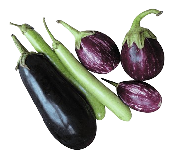
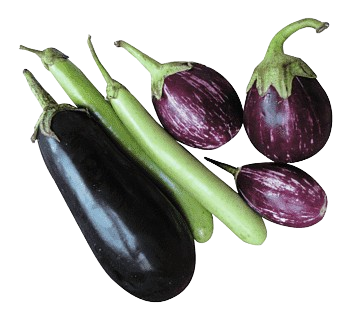

The Making of Vanilla, Banana & Strawberry Millefeuille:
Layer by delicate layer, this millefeuille was born from a desire for something light yet decadent — a sweet symphony of crisp, cream, and fruit.
We began with the golden puff pastry, baked to perfection until each sheet became crisp, flaky, and butter-kissed. The kitchen echoed with each delicate crack as they cooled on a rack, ready to become the base of something magical.
Then came the vanilla crème pâtissière — slow-cooked with fresh vanilla beans until thick and luxurious. Once chilled, it became the silky heart of our dessert.
Fresh bananas were sliced thinly, their mellow sweetness balancing the brightness of ripe strawberries, cut into heart-shaped slices for a touch of romance.
With steady hands, we layered: pastry, cream, fruit — again and again — until a delicate tower stood. The final touch? A crown of pastry, dusted lightly with powdered sugar and a drizzle of strawberry coulis.
Each bite? A dream. Crisp pastry that melts on the tongue, cream that comforts, and fruit that sings. The millefeuille — elegant, joyful, unforgettable.